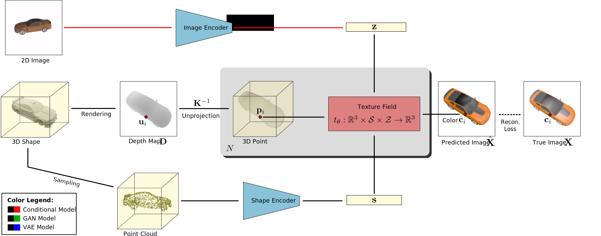
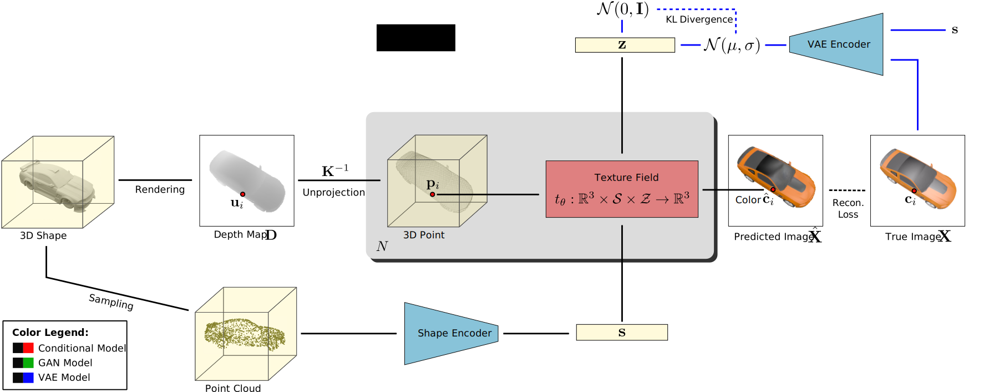
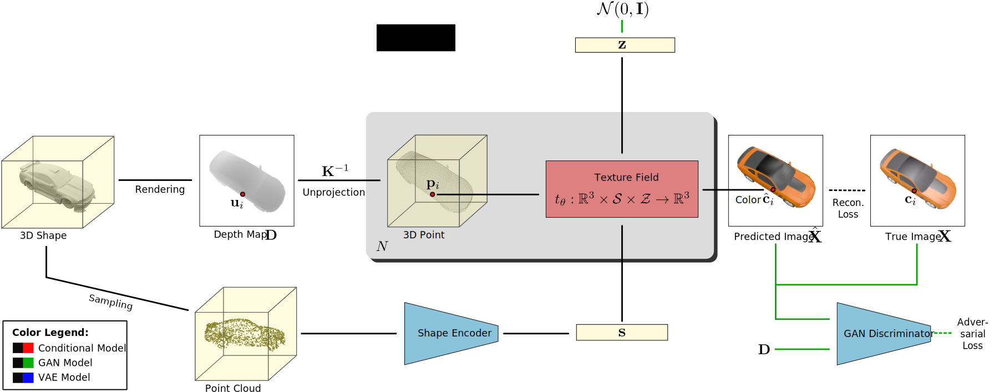

<div class="row-12 flex-row flex-center align-center" style="font-size: 2em">
    Appendix
</div>

---

<!-- .slide: class="layout-U" -->


## Occupancy Networks

<div class="subtitle">Ablation Study:</div>

<div class="column-1 flex-col fragment">
    <div>Effect of Sampling Scheme:</div>
    
</div>

<div class="column-2 flex-col fragment">
    <div>Effect of Architecture:</div>
    
</div>


<div class="column-3 flex-col">
    <strong class="fragment">Oberservations:</strong>
    <ol style="font-size: 0.8em; margin-left:2em;">
        <li class="fragment">Surprisingly, uniform sampling works best</li>
        <li class="fragment">Sampling very few points also works</li>
        <li class="fragment">ResNet blocks and CBN are helpful</li>
    </ol>
</div>

---

<!-- .slide: class="layout-1x1" -->

## Texture Fields

Training from images (supervised):

<div class="flex-col">
    
</div>

---

<!-- .slide: class="layout-1x1" -->

## Texture Fields

Training from images (VAE):

<div class="flex-col">
    
</div>

---

<!-- .slide: class="layout-1x1" -->

## Texture Fields

Training from images (GAN):

<div class="flex-col">
    
</div>